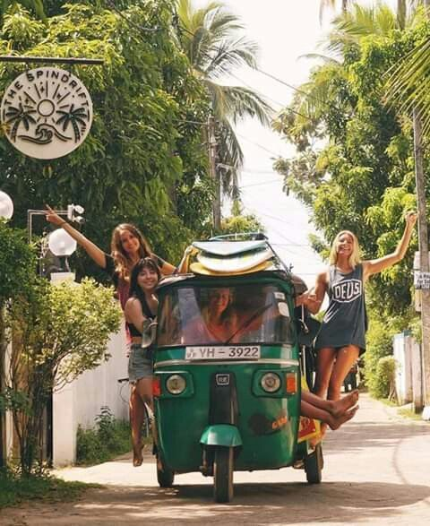
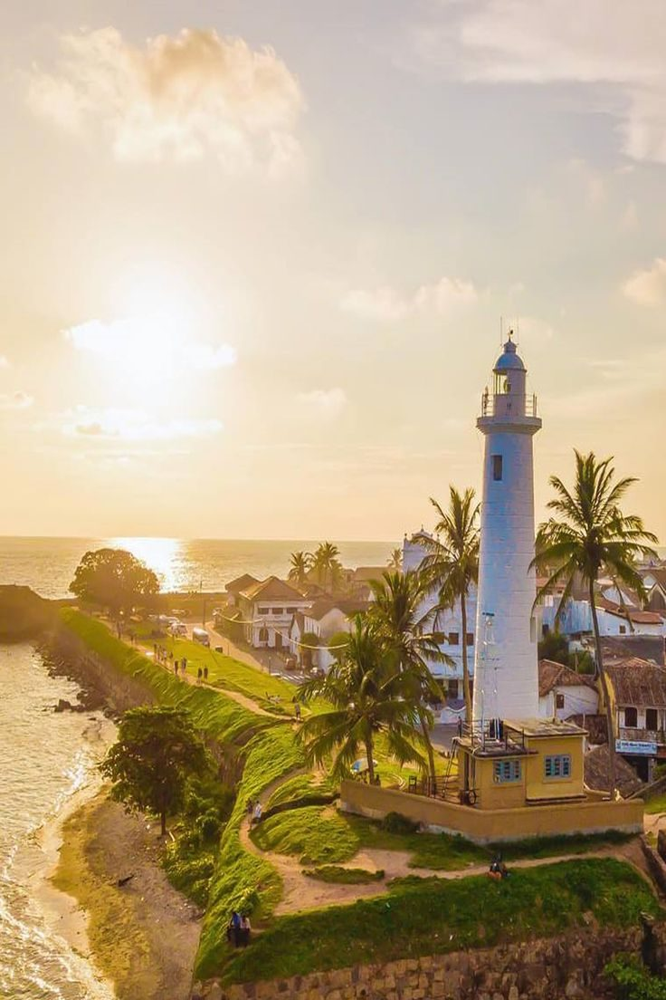
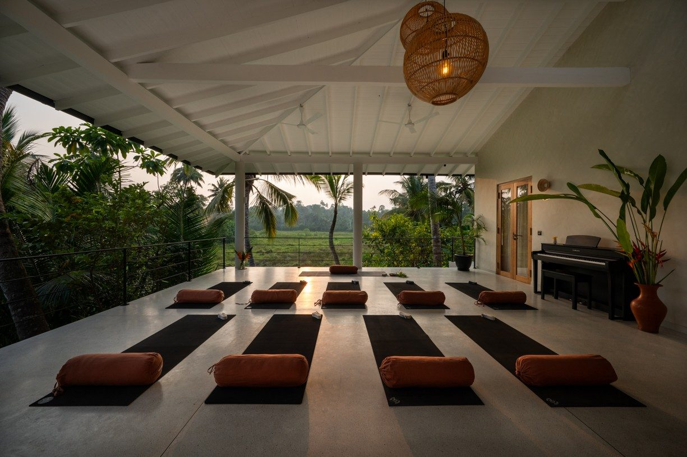
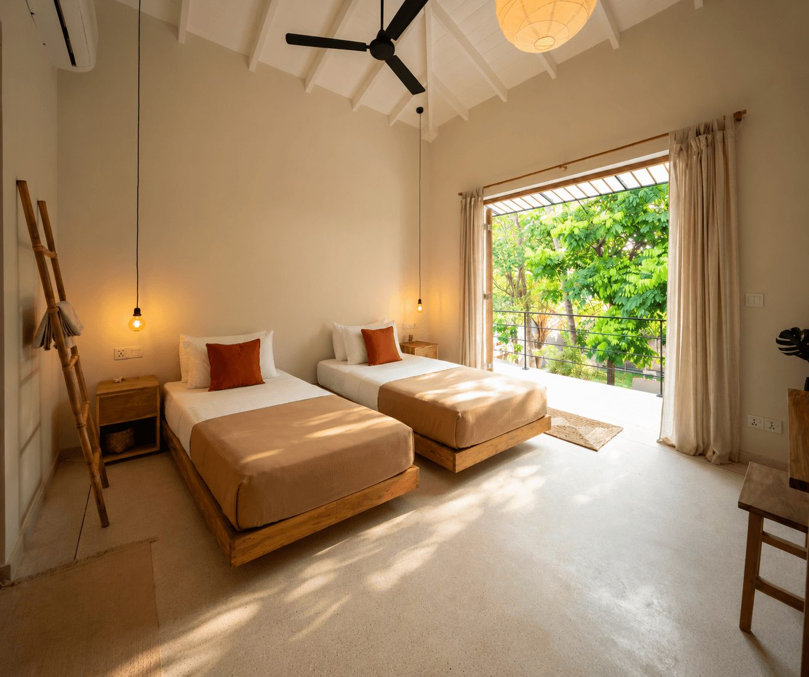
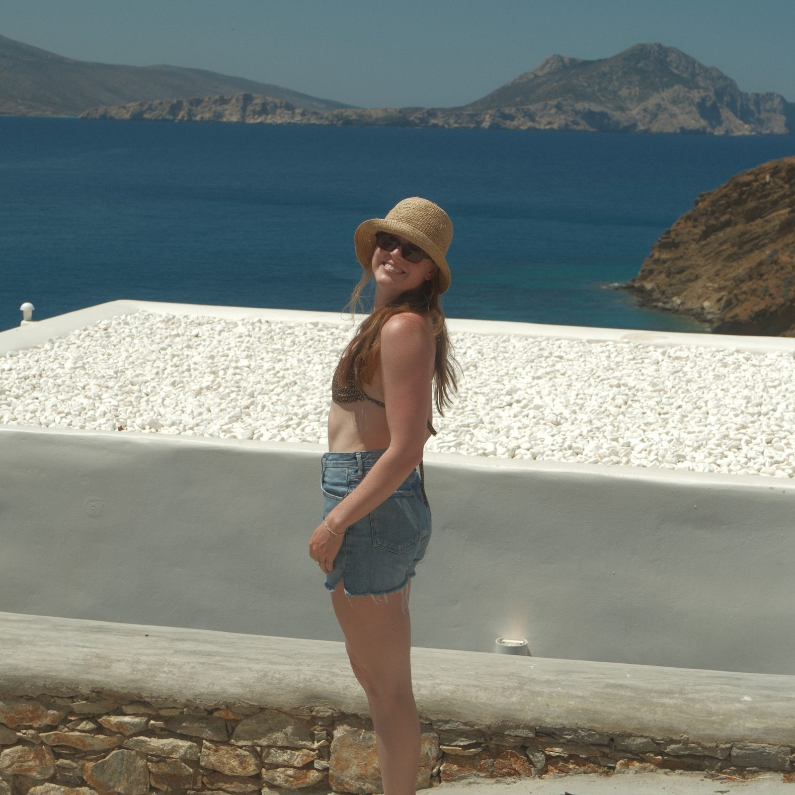
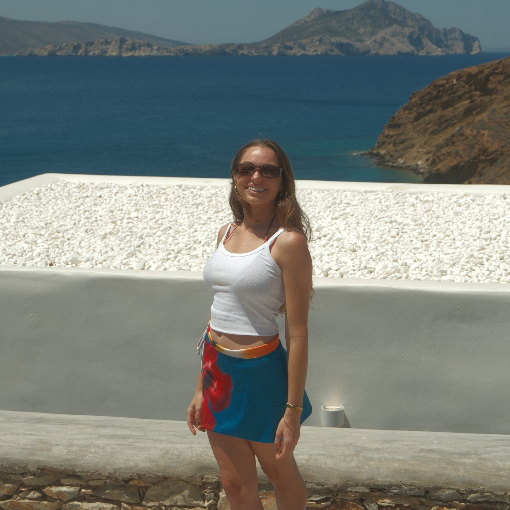
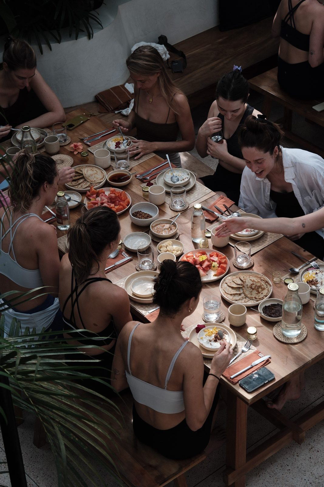
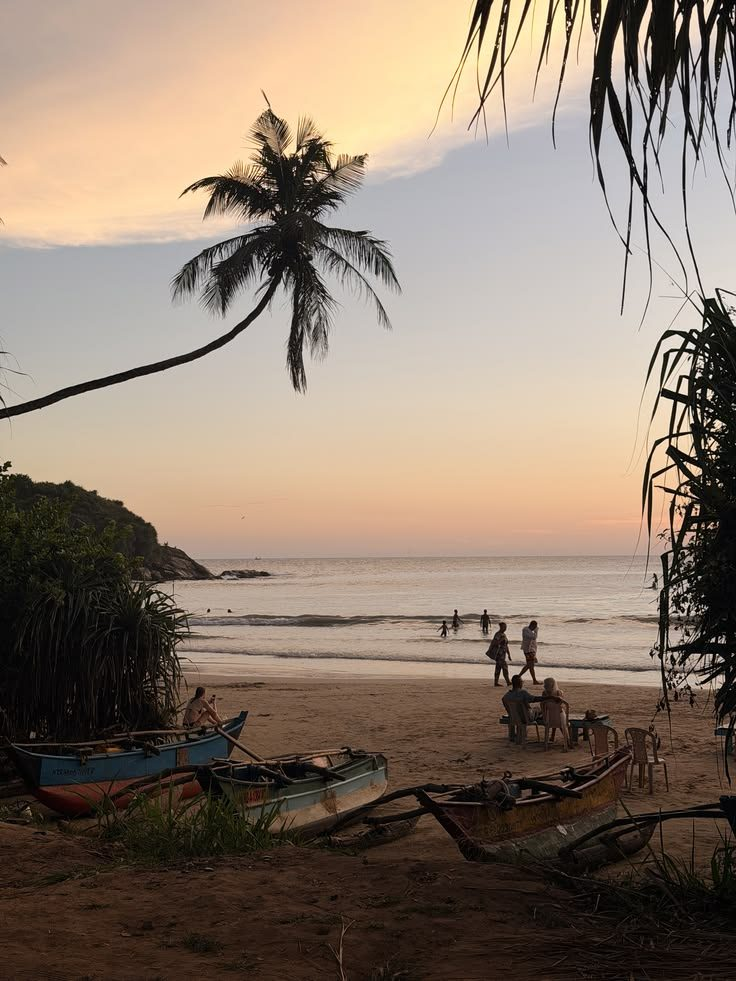

Jump to a section
Tap any section to go straight there. The Contents button in the corner brings you back here.
Hey hey, we are so excited for this retreat and that you are a part of it!
This guide is everything you need for Sri Lanka, in one place. Flights, what to pack, what's included, what isn't, what the week actually looks like, and the questions people usually have. It's a great document to refer back to as the retreat gets closer.
Habitat is for the ones who feel a quiet pull toward a bigger, truer version of their life. This isn't about escaping your life. It's about building one you don't need to escape from. We built Habitat so you'd have people to figure it out with. You don't need to arrive as anyone other than exactly who you are.
If something in here isn't clear, that's on us. Ask. There are no dumb questions.
See you in Sri Lanka.
xx,
Kennon + Carrigan
Your retreat at a glance
| Retreat | Sri Lanka Yoga + Pilates Retreat |
| Dates | Sunday, September 26 to Saturday, October 2, 2027 (6 nights) |
| Where | flowground home, Ahangama, south coast of Sri Lanka |
| Arrive | Bandaranaike International Airport (CMB), Colombo, by 12:00 PM (noon) on Sunday, September 26 for the group transfer |
| Depart | Check out Saturday, October 2. Book flights out of CMB for no earlier than 4:00 PM for the group transfer |
| Hosts | Kennon + Carrigan (Habitat) |
| Movement | Daily yoga + mat Pilates, plus workshops. All levels, always optional |
| Your room | Shared, see Where You'll Stay |
| Questions | Email habitat@habitatretreats.com (the fastest way to reach us) |
Housekeeping
We want you on the right trip and having the best week possible. Here are some things to note going into the retreat.
- Every class is optional. This is your vacation. Skip a morning, sleep in, go to the pool.
- First time doing yoga or Pilates? Let us know. Before or after class or during free time is a great time to ask questions.
- It's green season on the south coast. Late September is hot and humid, around 29°C / 84°F, with sporadic showers. They're often short, then the sun comes back. Everything is lush and we will spend our time moving our bodies, exploring cobblestone streets, enjoying tea, and all the in between moments.
- Sri Lanka runs on its own clock. Tuk-tuks, traffic and rain showers all bend the schedule. Come with a loose grip and you'll have a better time.
- You're in the paddies, not a hotel. Geckos, birds, frogs at night and the odd mosquito come with the view. There are no mosquito nets. Fans, AC and repellent do the job.
- Wi-Fi: yes.
- You're sharing space with people you may not know. Many people come solo, some come with friends. If something or someone is bothering you, tell us early (see our Anonymous Feedback Form in section 10). We can fix things in real time. Don't wait until the week is over to put it out there. That's a disservice to you and to the people around you.
- Plans can change. Weather, boats and local life sometimes rearrange the itinerary. We'll stick to the plan where we can. If we need to adapt, we'll swap in something just as good and tell you right away. We ask that you stay flexible and patient with the situation.
Day-by-day itinerary
Here's the shape of the week. This is a tentative plan. Activities may land on different days or in a different order, and we'll share the precise week schedule as the retreat gets closer. If any changes need to be made, we will send out an announcement in the group message.
Most mornings look the same: yoga or mat Pilates in the shala, a group circle with journaling, then breakfast. Afternoons are for going out or doing nothing. Evenings are yin, dinner, or both.


- Land at CMB by 12:00 PM (noon). Your group transfer to flowground is included, about 2.5 hours by road
- 4:00 PM | Arrive at flowground. Unpack, shower, pool
- 5:30 PM | Opening ceremony
- 7:00 PM | Welcome dinner at the house
The first evening is about landing. We'll meet as a group, set the tone for the week, and eat very well.
- 7:00 AM | Movement
- 8:00 AM | Circle + journaling
- 9:00 AM | Breakfast
- 10:00 AM | Day trip to Galle Fort
- 12:00 PM | Lunch inside the fort walls
- 12:30 PM | Turtle Beach
- 2:30 PM | Back at flowground. Free time
- 5:30 PM | Movement
- 6:30 PM | Dinner at the house
Galle Fort is a walled old town on the sea, full of cafes, little shops and colonial buildings. We'll wander, eat lunch inside the walls, then head to the beach to look for sea turtles if the sea lets us. Wear your swimsuit. No need to bring goggles.
- 7:30 AM | Movement
- 8:30 AM | Circle + journaling
- 9:30 AM | Breakfast
- 10:30 AM | Tuk-tuks into Ahangama
- 12:30 PM | Group brunch at Marshmallow
- 1:30 PM | Explore town, shop, beach
- 3:00 PM | Free time
- 5:30 PM | Movement
- 6:30 PM | Dinner at the house
A slow one. Iced coffee, sarong hunting, a swim if the water is calm, then back to the house before sunset.
- 7:30 AM | Movement
- 8:30 AM | Circle + journaling
- 9:30 AM | Breakfast
- 10:30 AM | Free time. Massage, book, pool, beach
- 3:00 PM | Movement
- 5:30 PM | Tuk-tuks to town
- 6:00 PM | Dinner out
The day is yours until afternoon yin. Then we ride into town for dinner.
- 7:30 AM | Movement
- 8:30 AM | Circle + journaling
- 9:30 AM | Breakfast
- 10:30 AM | White tea tasting
- 11:30 AM | Free time
- 4:00 PM | Koggala Lake boat safari
- 6:00 PM | Dinner out
We taste a rare white tea grown near the coast. In the late afternoon we take boats out on Koggala Lake, past mangroves, monkeys and the odd crocodile, to a small island where cinnamon is grown and peeled by hand.
- 7:30 AM | Movement
- 8:30 AM | Circle + journaling
- 9:30 AM | Breakfast
- 10:30 AM | Botanical workshop: make your own herbal hair oil and body butter
- 11:30 AM | Free time
- 4:00 PM | Closing ceremony
- 6:00 PM | Farewell dinner at Kai
The last full day. You'll make something to take home, have the afternoon free, then we close the week together and go out for one last dinner.
- Breakfast, final swim
- Check out
- Group transfers to CMB, grouped by flight times
Keeping you up to date. We're always looking for ways to make the week better. If anything changes on the ground, we'll share it in the group message, our main form of communication during the retreat.
What's included (and what isn't)
The short version: once you land at CMB, the week is essentially handled. Here's exactly what that means.
Included
- Accommodation: 6 nights at flowground home in a shared room
- Daily meals, a mix of at our venue and out and about
- Daily movement: a blend of mat Pilates and yoga
- Opening ceremony, daily circle + journaling, closing ceremony
- Galle Fort day trip
- Turtle Beach visit
- White tea tasting
- Koggala Lake boat safari + cinnamon island
- Botanical workshop: herbal hair oil + body butter
- Sauna + cold plunge at a social wellness club nearby
- Group airport transfers from CMB on Sunday, September 26 and back on Saturday, October 2, at the group times
- All transport during the retreat, by van and tuk-tuk
- Pre-trip support (flights, packing, the ETA, any question) and on-the-ground support all week
- Your custom Habitat retreat journal, plus a few surprises we won't spoil
- Two months free in the Habitat Blue Sky Collective
Not included
- Flights and any travel to CMB
- Travel insurance (recommended, not required, see section 7)
- Hotel nights before or after the retreat
- Anything you want to eat or drink in free time
- Alcohol
- Massages and other treatments, paid directly
- Tips for venue staff, drivers and guides (see section 9)
- Your ETA if your passport isn't on Sri Lanka's free list (free for US citizens, see section 8), vaccines, and anything personal
- Transfers outside the group times
Where you'll stay


flowground home | 6 nights
A two-story house built into the rice paddies just inland from Ahangama, with an infinity pool that looks straight out over the fields. The yoga shala is part of the house, so class is a few steps from your room. Kabalana Beach is about a 20-minute walk, and Ahangama's cafes and shops are a few minutes by tuk-tuk. The house is ours for the week.
- Address: No. 46A1, Keraminiyawatta, Karandugoda, 80650, Ahangama, Sri Lanka
- Website: flowground.com
- Check-in: from 3:00 PM on Sunday, September 26 | Check-out: Saturday, October 2. We'll share the time closer to the retreat
- On site: infinity pool over the paddies, 80 m² / 860 sq ft yoga shala, garden, living areas, outdoor dining, kitchen
- In your room: AC and ceiling fan, a daylight bathroom, locally made toiletries, pool towels, drinking water and tea
- Wi-Fi: yes
Rooms + roommates
- Shared rooms have two single beds. Two guests per room.
- Want a room to yourself? Ask. We'll tell you what's possible and the price.
- Coming with a friend? Tell us and we'll room you together.
- Coming on your own? We pair roommates based on your Roommate Matching Quiz.
- Room assignments go out before the retreat.
Getting there + getting home
You book your own flights, so you can come from anywhere and add travel on either side. Booking your own doesn't mean you're on your own. Send us any flight before you book if you want our eyes on it.
The only two times you need
Land at Bandaranaike International Airport (CMB), Colombo, by 12:00 PM (noon) on Sunday, September 26.
Book your flight out of CMB for no earlier than 4:00 PM on Saturday, October 2.
How you get there is up to you. Many people add a few days on the front or back end. Want help planning that part? Tell us.
Group transfers: We arrange group transfers from CMB to flowground on Sunday, and back to CMB on Saturday. Cars are grouped by similar arrival and departure times, so you may wait a little for the rest of your crew. We'll put you in a small group chat with them the week before so you can find each other. We'll share the transfer company and exact meeting spot as the retreat gets closer. The drive is about 2.5 hours down the Southern Expressway.
Arriving or leaving outside these times? That's okay. Let us know and we'll help you set up a private transfer.
Our flight advice
- Look at flights first. Find prices and times that work for you. From the US, most routes connect once through the Middle East, Europe or Asia.
- Book in the sweet spot. For Sri Lanka that's usually 4 to 8 months out, so February to May 2027 for this trip. Booking much earlier rarely saves money, and fares tend to climb in the last couple of months, but please do what makes you feel the most comfortable.
- Send your flights to us before you book if you're unsure. We are happy to take a look at them with you.
- Once booked, fill out the Flight + Info Form. It also collects dietary needs, health notes and emergency contact. This is how we plan your transfer.
Running late or stuck?
Email us at habitat@habitatretreats.com as soon as you know. On travel day you can also text or WhatsApp Kennon (+1 512 627 2297) or Carrigan (+1 903 515 0061). We'll rework your transfer. If you can't reach us, call flowground at +94 71 417 3294.
Extending your trip?
If you're adding days before or after the retreat and want recommendations, or you're curious whether we have hotel picks for Colombo or other parts of Sri Lanka, give us a holler.
Payments, cancellations + insurance
Deposit + balance
Your $400 deposit is paid and your spot is held. Your full balance is due by August 27, 2027 (30 days before the retreat), following the payment plan you chose at checkout. Payments come out automatically on the card saved at checkout and show on your statement as HABITAT RETREATS.
Late payments get a 5-day grace period per installment, then a 3% late fee on the overdue amount. If something comes up, reach out before the due date and we'll work with you.
Questions about your payments? Email habitat@habitatretreats.com.
If you need to cancel
Life happens. Here's how it works (full details in our Terms + Conditions):
| If you cancel | What happens |
|---|---|
| On or before May 9, 2027 (140+ days before) | Your payments (not your deposit) can be refunded, or moved to another Habitat retreat within 12 months |
| May 10 to June 27, 2027 (139 to 91 days before) | 50% of the retreat total (not counting your deposit) is due and non-refundable. If you've paid less than that, the difference is charged at this time |
| June 28, 2027 or later (90 days or less) | No refunds. 100% of the retreat total is due at this time |
- Your deposit is non-refundable and non-transferable in every case. When someone signs up, we pay vendors right away to secure their spot, and we can't get that back. If you cancel and part of your balance is kept under this policy, you can transfer that amount to a friend who takes your spot.
- The card you booked with is saved on file, and any amount due under this policy is charged to it.
- Cancel in writing to habitat@habitatretreats.com.
- No refunds if you're denied entry or don't meet passport, ETA or entry requirements.
- No refunds for arriving late, leaving early, or skipping activities.
- Weather, illness and flight problems don't change the policy. That's what travel insurance is for. We wish we could accommodate everything life throws at us, but with group travel it's impossible.
Shared rooms + roommates
Booked a shared room on your own and we haven't found you a roommate 60 days before the retreat (by July 28, 2027)? You'll get a private room, and we'll charge 50% of the difference between shared and private. We'll always confirm with you before any charge. If this causes financial stress, tell us and we'll work with you.
Travel insurance
Completely up to you. It covers the things we can't: missed flights, lost bags, medical bills abroad, and cancelling for illness or emergencies.
- Look for: trip cancellation + interruption, medical + evacuation, baggage delay.
- Buy it soon after booking. Many policies only cover pre-existing conditions if you buy within 14 to 21 days of your first payment.
- Check your credit card first. Some premium cards already include coverage.
In the past we have used BattleFace.
Passports, health + safety
Passport + entry
- Your passport must be valid until at least April 2, 2028 (6 months after the retreat ends), with at least 2 blank pages. Check it today.
- ETA (required). Every visitor needs an Electronic Travel Authorization before boarding a flight to Sri Lanka. Since May 25, 2026, the tourist ETA is free for US citizens and passport holders from about 40 other countries. It covers a stay of up to 30 days. Approval usually takes 1 to 3 days. Apply about a month before you fly.
- Apply only at eta.gov.lk. Lots of look-alike sites charge a fee for the same thing. Save the approval email and a screenshot. Some airlines check it at check-in.
- Arrival card. Fill out Sri Lanka's free online arrival card in the 3 days before you land, through the Department of Immigration's official site. Don't pay a third party to do it.
- Not a US citizen? Check your own country's rules. You're responsible for your own entry and exit.
- Renewing your passport before the trip? Do it before you apply for the ETA, then send us the new details. The ETA is linked to your passport number.
- Save a photo of your passport to your phone and email it to yourself.
Entry rules in Sri Lanka have changed several times in the last few years. We'll recheck them before the retreat and tell you if anything changes.
Health
- Vaccines: none are required unless you're arriving from a yellow fever country. The CDC recommends hepatitis A and typhoid for most travelers, and some people also get hepatitis B, rabies or Japanese encephalitis. Check the CDC travel page for Sri Lanka and talk to your doctor 4 to 6 weeks before if you want to consult someone on your upcoming travels and safety precautions.
- Tell us about allergies, injuries, pregnancy, or health conditions in your Flight + Info Form. It stays between us and the people who need to know (the kitchen, your hosts). Please be thorough. The more we know, the better we can look after you.
- Bring any prescriptions in original packaging with a copy of the prescription and a doctor's letter, plus a few extra days' supply.
- Controlled meds: medicines with codeine and ADHD meds (Adderall, Ritalin, Vyvanse) are controlled in Sri Lanka and can need approval from the National Medicines Regulatory Authority (NMRA) before you bring them in. If you take either, check with your doctor and the NMRA well before you fly. Vapes and e-cigarettes are banned and will be confiscated.
- Nearest hospital: Asiri Hospital Galle, a private hospital with 24-hour emergency care, about 40 minutes by road. Pharmacies are in Ahangama.
- Tap water: don't drink it. flowground provides drinking water, so bring a bottle to refill.
- Sun: Sri Lanka sun is strong, even on cloudy days. SPF, hat, and water are musts.
Safety
Sri Lanka is a popular, generally safe place for traveling. Normal travel sense applies.
- Keep your passport somewhere secure. Carry a copy.
- Don't leave bags unattended at the airport.
- Emergency numbers in Sri Lanka: police 119, ambulance 1990, tourist police 1912. We'll also be with you all week.
Know before you go: Sri Lanka
Weather
Late September on the south coast can be sticky and green. Expect sun most days with showers sporadically, often heavy and short.
| Day | Night | Sea | Rain | |
|---|---|---|---|---|
| Late September | 29°C / 84°F | 24°C / 75°F | 28°C / 82°F | Heavy short downfalls |
Time zone
Sri Lanka is UTC+5:30, 10.5 hours ahead of Austin (Central) and 12.5 ahead of LA (Pacific) in late September.
Money
- Currency: Sri Lankan rupee (LKR). Roughly 330 LKR = $1 USD. Exchange rates may change over time.
- Cards: fine at bigger cafes, restaurants and shops. Cash for tuk-tuks, markets and small places.
- ATMs are in Ahangama and Galle.
- Always choose to be charged in local currency.
- Tell your bank you're traveling.
Tipping
Tipping is completely up to you and your experience. It's never required, but it's appreciated by the people who make the week happen. Had an incredible experience? Tip more. Felt more "meh"? That's OK too.
- Venue team: Near the end of the week we'll pass around an envelope. Tip what you'd like, and it's shared among the staff who looked after us.
- Drivers and guides: Tip them directly at the end of the activity, if you'd like.
- Restaurants on your own: many add a 10% service charge, so check the bill. If it's not there, about 10% is normal.
- Tuk-tuks: rounding up is plenty.
Phone + data
- Check your carrier's international plan before you go (many major carriers have international day passes).
- An eSIM is usually easiest. Airalo or Holafly work well. Install before you fly, turn on when you land. Or grab a Dialog or Mobitel SIM at the airport after baggage claim.
- Our group message is how we'll all talk.
- Wi-Fi at flowground: yes.
Plugs + power
Sri Lanka runs on 230V, with mostly Type D and Type G sockets. flowground has universal sockets and USB charging, but bring 1 adapter for days out. Most phone and laptop chargers are fine. Hair tools often aren't, so bring dual-voltage.
Local customs
- At temples, cover your shoulders and knees, and take off your shoes and hat.
- A few words go a long way: Hello = Ayubowan | Thank you = Bohoma sthuthi.
What to expect on retreat
Your hosts

Your hype girl on the ground, and the one who'll find the best swimming spot.

Started Habitat to put intentional travel and community in the same place. Most likely to talk you into a sunrise ocean dip.
We teach every class and we're with you the whole week. No handoffs.
Classes + movement
- One morning class every day (yoga or mat Pilates), plus classes in some evenings as well.
- All levels. We'll give options for beginners and challenges for regulars.
- Always optional. Sometimes the moments you follow your intuition on a retreat become the most memorable.
- Injured, pregnant, or recovering? Tell us in your Flight + Info Form and at the start of class.
- Mats, bolsters, blocks and straps are provided, so no need to bring anything for class.
Food
- Breakfast and dinner at the house are cooked fresh.
- If you're hungry for lunch on Wednesday, Thursday and Friday, it's on your own. Ahangama has great cafes a short tuk-tuk ride away, and we'll share our favorites.
- Allergies will all be cared for. List them in your Flight + Info Form and the kitchen will know your name and your needs.
- If something doesn't look right for you, tell us. We'll fix it on the spot.
- Alcohol: not included.
Free time
There's real free time built in, on purpose. Pool, nap, book, a massage, sauna and cold plunge at the wellness club, wander into town, or join whatever little crew forms that day. We'll share our favorite spots and suggestions in the group message.
Staying in touch
- Email is the best way to reach us about anything before the retreat starts, plus payments, forms and this guide.
- Group message will be the primary form of communication during the week and shortly before. There will be a retreat group chat made for communication right before and during the retreat. It's where people swap flights, plan pre-trip meetups, and where we post daily updates during the retreat. Heads up: your name and number will be visible to everyone in it.
- Travel-day group chats go out about a week before, grouped by arrival time, so you can find each other and ride to the house together.
- Pre-retreat group call happens about a month before (30 min, notes sent after if you can't make it). Meet the group and ask anything. We'll send the date and time closer to it.
Anonymous feedback
We want your week to be the best one. We also know it's hard to tell the hosts something isn't working. So during the retreat, an anonymous form stays open and we check it every day. Wishing there was more of something? Someone making you uncomfortable? Room issue? Tell us early so we can fix it before you go home. Anonymous Feedback Form
Arrival + check-out day
- Check-in: from 3:00 PM. Our group gets there around 4:00 PM.
- Check-out day: We'll share the check-out time closer to the retreat. Breakfast and a last swim first.
If you get sick or hurt
Tell us right away, day or night. We'll help you get to a pharmacy or clinic if needed. Serious cases go to Asiri Hospital Galle, about 40 minutes away. We will take good care of you!
Valuables
Keep your passport, cards and cash somewhere secure in your room. Habitat isn't responsible for lost or damaged belongings, so bring nothing you'd be heartbroken to lose.
After the retreat
- Photos: We'll share a group album with photos from the week.
- Feedback survey: You'll get a short, fully anonymous survey after the trip. We rely on it heavily to make every retreat better, so please be honest.
- Left something behind? Contact flowground directly and we'll help where we can.
Extras
- Massages + treatments: can be arranged during free time. Paid directly.
- Extra goodies on site: settled before you leave.
A few house rules
- Be on time for transfers and excursions.
- Look out for each other.
- What's shared in circle stays in circle.
- Anything you book on your own during free time (scooter rentals, surf lessons, extra tours) isn't run by Habitat and is at your own risk.
- Your liability waiver is attached to the email with this guide. Fill it out, sign it and email it back to habitat@habitatretreats.com before you arrive. You can't take part without it.
Packing list
Luggage: Completely up to you on how much luggage you want to bring. This is your vacation! If you have tight connections or multiple separate bookings, be mindful of checked baggage. Put your name and number on everything in case it gets lost. We travel by van and tuk-tuk, so bring a small day bag for outings.
Pack a carry-on like your checked bag might be late. If you're checking a bag, pack a swimsuit, one workout set, a change of clothes, meds, chargers and toiletries for 2 days just in case.
Travel essentials
- Passport (valid until April 2, 2028) + a copy
- ETA approval email, saved offline
- Phone, charger, power bank
- Plug adapter (1, Type D/G)
- Credit/debit cards
- Travel insurance details
- Prescription meds in original packaging, with prescription
- Headphones, eye mask, earplugs
- Reusable water bottle
Movement
You'll have 1 to 2 classes a day. You're welcome to re-wear workout clothes, so you don't need one set per class.
- Athletic/workout clothes (breathable, it's humid)
- Sports bras
- A light layer for crispy times of day
Days + excursions
- Swimsuit(s) + cover-up
- Sandals + one pair of comfortable walking shoes
- Hat + sunglasses
- Sunscreen
- Day bag or tote
- Light rain jacket or packable umbrella
- Quick-dry towel for the beach and boat
- One outfit that covers shoulders and knees for temples
Evenings
- Dinner outfits. Whatever you want to wear on vacation, this is your week.
- A light wrap. AC and evening boats can feel cool.
Toiletries + health
- Toiletries
- Insect repellent
- After-sun or aloe
- Basic meds: pain reliever, antihistamine, stomach settler, blister plasters
- Period products
Nice to have
- A good book
- Your fav game
Leave at home
- Hair tools that aren't dual-voltage
- Your yoga mat (we have them)
- Vapes and e-cigarettes (banned in Sri Lanka)
- Anything you'd cry about losing
Your timeline + to-do list
Everything you need to do, in order. Tick as you go.
- Check your passport is valid until April 2, 2028
- Sign + email back your liability waiver (attached to the email with this guide)
- Buy travel insurance (not required, strongly recommended if your credit card doesn't already cover you)
- Save "Habitat Sri Lanka" in your calendar, September 26 to October 2, 2027
- Booked a shared room on your own? Take the Roommate Matching Quiz
4 to 8 months out
- Start looking at flights. Send us any you're considering if you want our eyes on them
- Book flights in this window (send to us first if unsure)
- Fill out the Flight + Info Form: flights, dietary needs, health notes, emergency contact
- Book any pre/post hotel nights
About 6 weeks out
- See your doctor or a travel clinic about vaccines
- Taking codeine or ADHD meds? Check the NMRA rules now
1 month out
- Apply for your free ETA at eta.gov.lk
- Make sure your liability waiver is signed and returned
- Join the group call (about a month out)
- Balance fully paid by August 27, 2027 (automatic on your plan)
- Order adapter, repellent, eSIM
- Look for your travel-day group chat
- Check in for flights, download boarding passes
- Download offline maps and your eSIM
- Pack (see section 11)
- Screenshot this guide's key times and your ETA approval
- Fill out Sri Lanka's free online arrival card
- Passport, ETA, phone, charger, cards
- Message the group when you land
- Find your driver at the meeting spot we share before the retreat


FAQ
The questions we get most. Still wondering something? Ask us, and we'll add it here.
Before you go
I'm coming alone. Will that be weird?
Not even a little. Most people sign up solo.
I'm not very fit / flexible / experienced. Is that OK?
Yes. Every class is all levels and optional. You'll get options for your body. Let us know if you want extra instruction outside of classes.
Can I bring a friend?
Absolutely! Tell them to book the same way you did and we'll room you together.
How old are people who come?
Every age is welcome, however most women are between 25 and 38.
Can I get my own room?
We're only offering shared rooms on this retreat, but ask. If we can make it work, we'll send you the price.
Can I give my spot to a friend?
If you need to cancel, any balance we keep under the cancellation policy can go toward a friend who takes your spot. Your deposit can't be transferred. Email us and we'll set it up.
What's the pace like?
Easy. One morning class, a slow breakfast, then an outing or free time most days. Nothing is a hard physical day.
Travel
Do I need a visa?
You need an ETA before you fly. It's free for US citizens. Apply at eta.gov.lk about a month out. See section 8.
Do you book flights for me?
No, but we'll help you pick them. Send us options any time.
What if my flight is delayed?
Email us right away. On travel day, text Kennon or Carrigan. We'll help you as best we can!
Can I arrive a day late or leave early?
You can, but we don't refund missed nights and you'll need to arrange your own transfer. Tell us in advance.
Can I stay at flowground before or after?
The house is booked for our group only. Ask us for recommendations nearby.
Is it safe for women?
Sri Lanka is a popular, generally safe place for women traveling. Use normal travel sense, agree tuk-tuk fares up front, and you'll be with the group for almost everything.
On retreat
Do I have to do everything?
No. Every class, circle, and activity is optional.
Will it rain the whole time?
Probably not. Late September brings showers on a lot of days, often short. We have a covered shala and swap plans around the weather when we need to.
Can I surf?
Surfing isn't part of this retreat, and the sea is rough this time of year. Book a lesson on your own in free time at your own risk.
How much free time is there?
Most afternoons have some, plus most of Wednesday.
I have a food allergy. Will I be OK?
Yes. Put it in your Flight + Info Form. The kitchen will know your name and your allergy. Tell us if anything looks off.
Is alcohol included?
No. Drinks at dinners out or in free time are on you.
Can I get a massage?
Yes, in free time. It's paid directly. We can help you set that up with the venue.
What should I wear to dinner?
Whatever you'd wear on vacation. Nothing formal.
What if I don't click with my roommate?
Tell us, privately or through the anonymous form. We'll handle it quietly.
Money
Do I need cash?
Some. Rupees for tuk-tuks, small shops, lunches on your own and tips. ATMs are in town.
Should I tip?
See Tipping in section 9.
Contacts + emergencies
Screenshot this one.
| Who | How to reach | When |
|---|---|---|
| Habitat | habitat@habitatretreats.com | Anything, anytime. The best way to reach us |
| Kennon | +1 512 627 2297 (call, text, WhatsApp) | On the ground |
| Carrigan | +1 903 515 0061 (call, text, WhatsApp) | On the ground |
| flowground | +94 71 417 3294 or +94 71 697 4994 | hello@flowground.com | If you can't reach us |
| Transfer company | Shared closer to the retreat | Arrival/departure day |
| Local emergency | Police 119 | Ambulance 1990 | Tourist police 1912 | Police, ambulance |
| Asiri Hospital Galle | +94 91 464 0640 | 24-hour emergency care |
| US Embassy Colombo | +94 11 202 8500 | 210 Galle Road, Colombo 03 | Lost passport, serious trouble |
| Your insurer | Save it in your phone | Medical, delays, lost bags |